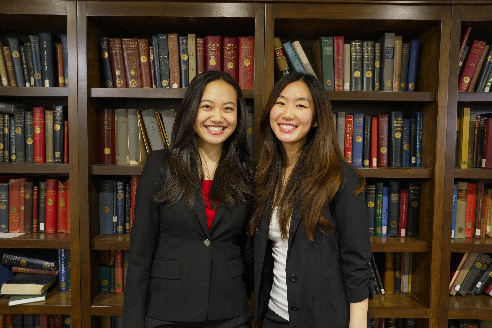
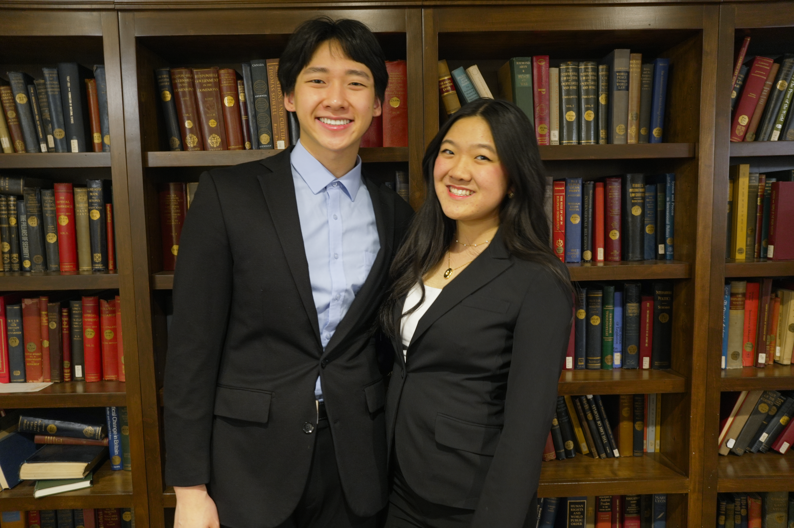
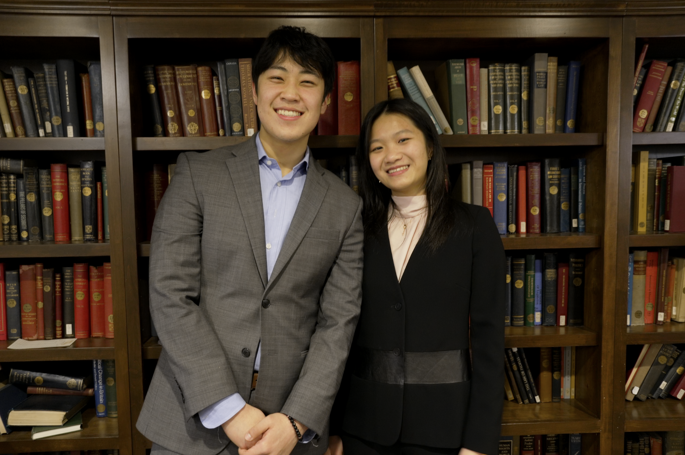
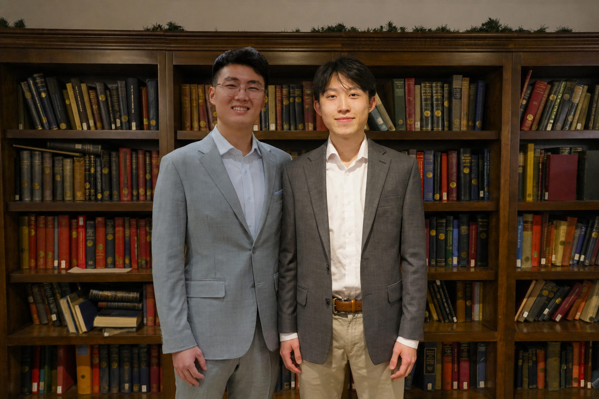
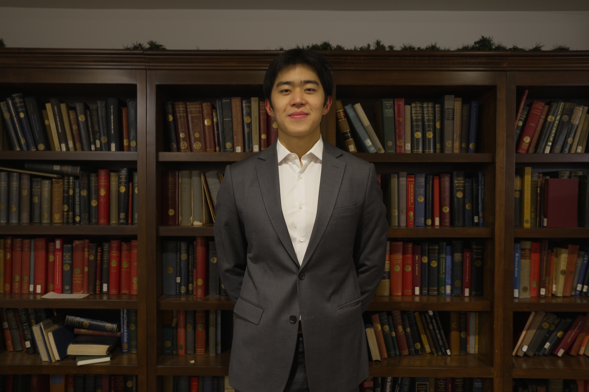
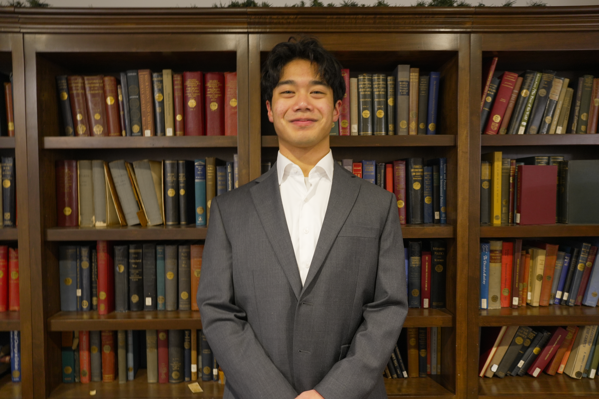
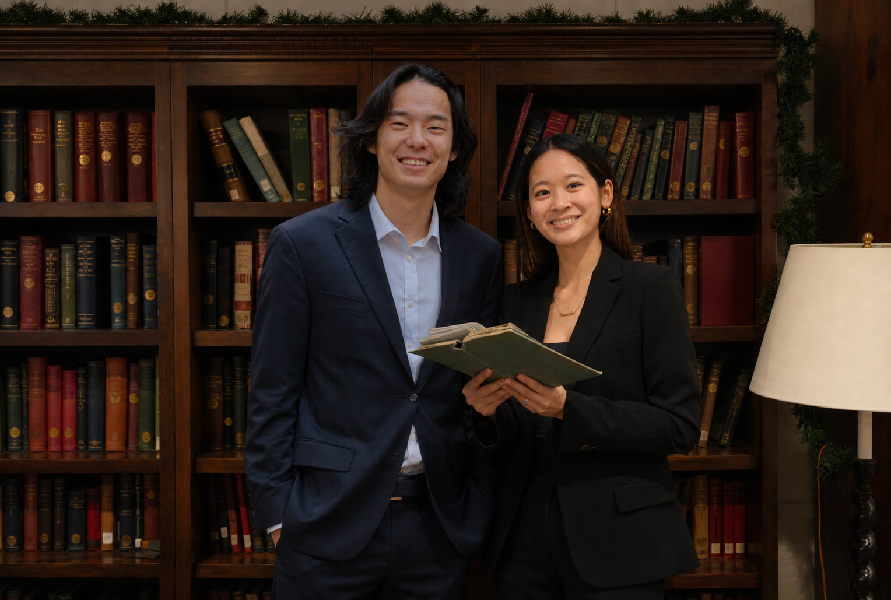

Meet The Board

Presidents
Summer Sun is a senior in Dunster from Chico, California, studying Government. She loves kimchi, the color red, putting Lao Gan Ma on anything she eats, and bathroom stall doors that open out instead of in.
Lily is a senior in Dunster concentrating in Neuroscience on the biology track. In her free time, she enjoys being outside, drawing, and rewatching Studio Ghibli movies. She loves Laufey and cats!
Vice Presidents
Audrey Sun is a junior from Massachusetts studying Physics and English. She loves playing violin, reading, watching rom coms, and she is so good at eating hot pot.
Claire Grumbacher is a junior from New York City studying Psychology and Anthropology. She adores creating new recipes at the dining hall, trying out various cuisines, and CSA!


Cultural Co-Chairs
Yan Bo Lin is a sophomore studying Archaeology and Integrative Biology. He can ride a unicycle, a scooter, and your mom.
Dean forgot to fill out the form...
Social Co-Chairs
Patrick is a sophomore from Lansing, Kansas in DUNSTERRRR house. You’ll frequently find Patrick going to the gym while listening to Megan Thee Stallion, doodling on their iPad instead of studying, or playing Pokemon rom hacks in the comfort of their room.
Olivia is a sophomore originally from Appleton, Wisconsin. In her free time, she enjoys dancing, cafe-hopping, and sidequesting with friends!


EdPol Co-Chairs
Justin is a sophomore from San Francisco, California, and he spends his time doodling in class, exploring with his girlfriend at Wellesley, and overall shirking a large portion of his responsibilities.
Adalia Wen is a sophomore from Weston, MA, planning to concentrate in Social Studies with secondaries in Economics and Philosophy. She likes performatively reading the news, learning about Chinese tea tasting, and filling her iphone storage with candids of her friends.
Sibfam Co-Chairs
William is a sophomore from Hong Kong concentrating in Environmental Science and Public Policy. He’s a wildlife photographer and a scuba diver who also loves to play the guitar!
Tony is a sophomore in Lowell House from Chicago, IL. He spends his free time golfing, cooking, and enjoying the outdoors. He loves exploring different cuisines.


Tech Chair
Eric is a junior in Mather concentrating in Computer Science and Mathematics. His top three favorite foods are dumplings, wontons, and El Monterey Chicken & Cheese Taquitos.
Historian
Jian is a junior from Madison, Wisconsin. He spends his free time maintaining/repairing bikes, trying to learn jazz piano, watching Kung fu panda, and gambling away jolly ranchers in friendly bouts of poker.


Finance Co-Chairs
Angela is a junior studying computer science, economics, and government! She loves rapidly consuming comedy-action shows or NFL/NBA compilations, playing board games, eating any food, and yapping and side questing with family and friends!
Chloe Zhan is a junior in Currier studying Applied Mathematics and Economics with a secondary in Computer Science. She loves exploring museums, reading, and wasting all her money trying new cafes around Boston!
Publicity Co-Chairs
Kathy Zhao is a sophomore planning to study Sociology and Statistics. She is a big fan of The Good Place, persimmons, fencing, and playing guitar.
Leanna forgot to fill out the form...


Senior Council Co-Chairs
Alex is a junior from Sharon, Massachusetts studying Physics, Math, and CS. He loves CSA and Chinese people and all other people.
Allison is a senior in Winthrop studying Economics and Psychology. In her free time, she loves exploring new restaurants and work out studios with friends, frolicking in museums, or picnicking by the Charles River (when weather permitting).
Secretary
Rachel is a junior from New York City concentrating in Bioengineering. She loves skateboarding, the color navy, jamming out to songs, building mechanical keyboards, and spontaneous trips to Berryline (cookies and cream with black raspberry!)